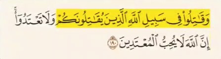
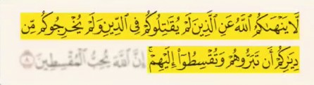
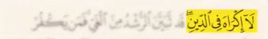

این حرف هیچ نسبتی با قرآن و اسلام نداره
در قرآن حتی یک آیه وجود نداره که بگه شخص را فقط به خاطر کافر بودن باید کشت
دستور جنگ در قرآن همیشه مشروطه و محدود بوده و فقط با افرادیه که علیه شما میجنگن و خدا دستور دفاع داده نه جنگ
خدا در آیه 190 سوره بقره میگه :

و در سوره ممتحنه آیه 8 میگه :

و همچنین در آیه 32 سوره مائده خدا میگه :
هرکس فردی را بدون مرتکب شدن به جرمی بکشد چنان است که گویی همه مردم را کشته است
در این آیه هم بحث مسلمانی یا غیر مسلمان بودن مطرح نیست
اگر قرار بود هر غیر مسلمانی به جرم کافر بودن کشته بشه ، قرآن اجازه نیکی و عدالت و ازدواج به اهل کتاب نمی داد
در آیه 256 سوره بقره خدا میگه :
یعنی در انتخاب دین شما عیچ اجباری نیست
اسلام اصل را بر گفتگو و آزادی ایمان گذاشته
وقتی در پذیرفتن دین اجباری نیست ، کشتن بخاطر اینکه مسلمان نیست قطعا جایگاهی در اسلام نداره
این که میگن مسلمان باید خشن باشه یا مسلمان حقیقی کسیه که توان آدم کشتن داشته باشه سخنی کاملا دروغه و هیچ ارتباطی با اسلام نداره
پیامبر مگر مشرکین مکه را نبخشید ؟ اونم در زمان اوج قدرت بدون اینکه بگه باید مسلمان بشین
همچنین پیامبر می فرماید :

معیار قرآن تقوا ، اخلاق و عدالت و دفاع در برابر تجاوزه نه خشونت و کشتن انسان ها بر اساس باورهاشون
هر فردی با هر عنوان و لباسی که باشه چه ملا و مولوی یا آخوند و آیت الله نماینده دین نیستن
تنها نماینده دین کتاب خداست ، قرآن معیار نهاییه اگر حرف کسی خلاف قرآن بود حتی اگر عمامه اش از خودش هم بزرگ تر باشه حرفش ارزشی نداره